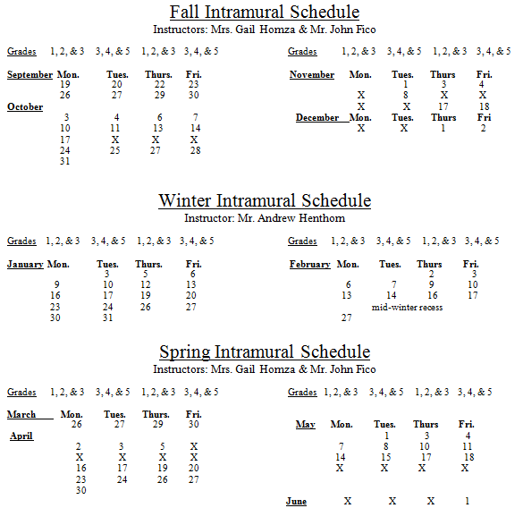

|
Bernards Township Public Schools Dear Families, Plans for the Liberty Corner's 1st -5th grade intramural seasons are underway. There are three seasons per year; Fall, Winter, and Spring. Each season will be 7 weeks long and each session will run from 3:15-4:15, Mondays (grades 1, 2 & 3), Tuesdays (grades 3, 4 & 5), Thursdays (grades 1, 2 & 3) and Fridays (grades 3, 4 & 5). Notice, 3rd grade can choose to go with the older children or younger children. I believe this flexibility will give the 3rd graders the opportunity to play with the group that best suits them developmentally and/or socially. The schedule for each session is attached to this notice. Our limit for participants is 25 students per day. If space allows, your child may register for an additional session (both days) however, an additional fee will be required. Fee: $60 per session (one day a week for 7 weeks), $120 per two sessions (both days). Registration at this time is for the Fall, Winter, or Spring Season. Registration will be open throughout the year, provided there are openings. Please remember to include your E-mail address on the registration form. Please place your check and your child's permission slip, in an envelope marked "Intramural Program" and return it to your child's teacher. *Fall participant registration must be received by Friday, September 16th*. The Fall session will start on Monday, September 19th. Attendance will be taken at each daily session. If your child is in school and will not be attending his/her regularly scheduled session, a note or call to that affect is required (204-2550 ext. 326). If your child is scheduled to attend intramurals and does not go to his/her session, we will be obligated to call home and then call emergency numbers. **Children are to be picked up after intramurals promptly at 4:15. Pick up is at the back of the gymnasium. Any child that is picked up late or does not attend when scheduled, without excuse may lose their privilege to attend. Please retain this page, schedule, and rules for participation for your records. ActivitiesActivities for the intramural program will include:
 Bernards Township Public Schools Liberty Corner Elementary Intramural Registration FormPlease return this form and check to your child’s classroom teacher My child________, has permission to participate in the Bernards Township intramural program. I understand that I am responsible for providing transportation home at the end of each session. Pick-up is promptly at 4:15. I understand that if my child is still at school after 4:15, emergency numbers will be contacted. Please list in order of preference (1, 2) the day or days your child would like to participate (appropriate grade level is required for participation) and circle the season(s) also. Fees are $60 for the session, for one day per week participation. Leave a blank next to any day your child cannot attend. Please understand that your choice may not necessarily be accommodated, if numbers exceed 25 children per session.
In the unlikely event of an emergency during intramurals, please contact any one of the following people during the hour of 3:15 and 4:30. Please be sure that the following numbers are current. Please print the names and numbers clearly. Thank you. Bernards Township Public SchoolsIntramural Program Rules and Procedures
Intramural participation is a privilege and participation will be suspended if rules and procedures are not followed. Thanks in advance for your continued cooperation! |
[ Log On ]